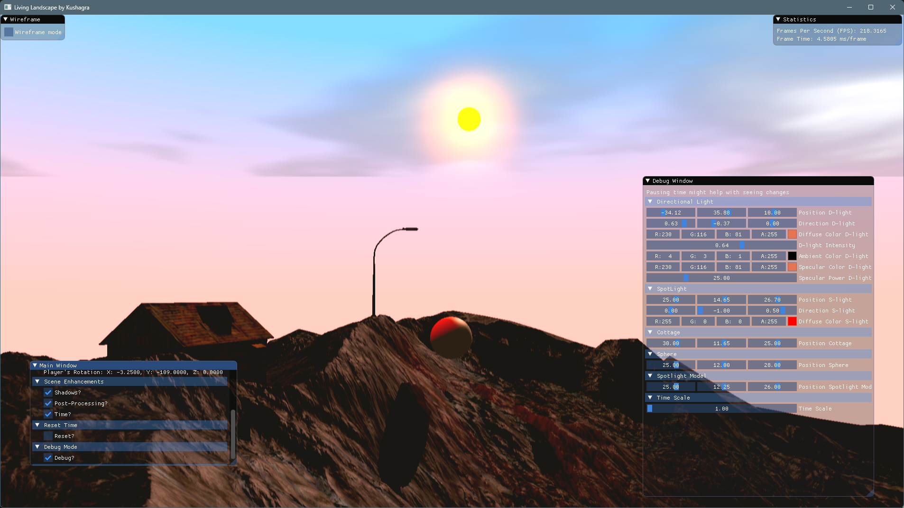
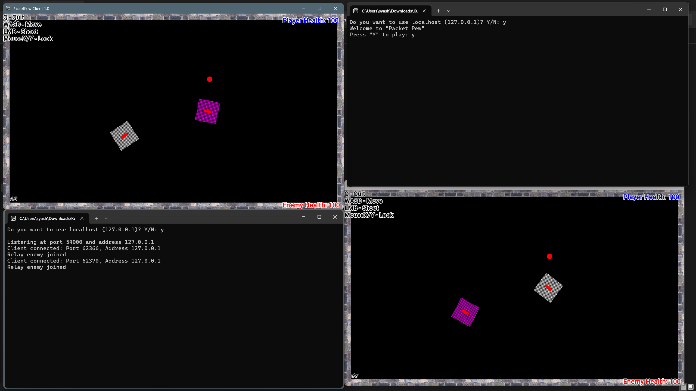

Achieved B+ Grade (3.5/4.5) - Term 1.
Coursework:
Studied a range of subjects (Term 1), including:
Graphics Programming
Advanced 3D Game Mathematics
Artificial Intelligence for Games
Networking for Games
Advanced 3D Game Mathematics
Artificial Intelligence for Games
Networking for Games
Skill Development:
Enhanced game development skills and learnt more about the internal working of a game.
Developed several projects to understand the modules and participated in various events and jams.
Developed several projects to understand the modules and participated in various events and jams.
Projects Created during the program (Term 1).

Living Landscape: A Dynamic Terrain Simulation using DirectX11
Living Landscape: A Dynamic Terrain Simulation using DirectX11
A dynamically tessellated terrain with height-mapped geometry, multiple lights, accurate shadows, a day-night cycle, and advanced real-time rendering. Powered by DirectX11 and C++, created for the Graphics module.

STIG: FSM Vs Fuzzy Logic
An AI application where 2 techniques, FSM and Fuzzy Logic, are compared for the task of obstacle avoidance on a race track. Powered by Unity Engine and C#, created for the AI module.

PacketPew: A 2D Networked Shooter
PacketPew: A 2D Networked Shooter
A 2D multiplayer shooter with implementation for techniques such as prediction and interpolation in order to handle poor network conditions. Powered by SFML, created for the Networking module.